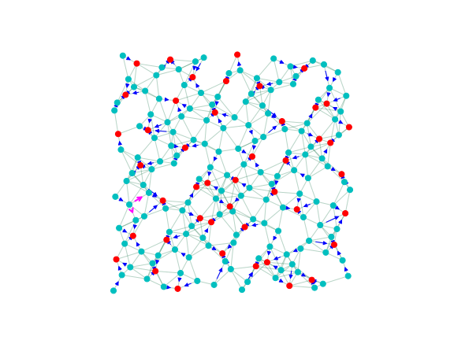

layout: true class: typo, typo-selection --- count: false class: nord-dark, middle, center # 🔀 spareTSV ### Cycle-Cancellation Descent for Min-Cost Flow @luk036 👨💻 · 2026 📅 --- ### 📋 Agenda .pull-left[ **🧠 Part 1: Problem & Setup** - spareTSV Problem Formulation - The digraphx Ecosystem - MCF via Cycle-Cancellation **🟢 Part 2: Implementation** - Building the Residual Graph - Bug: Parallel Edge Collision 🔧 - Fix & Verification Results ] .pull-right[ **🏭 Part 3: Constraints** - Vertex-Disjoint Constraint - NegCycleFinderQ + VertexFilter - Tracking "Used" Nodes **📊 Part 4: Analysis** - Violation Case Study (seed=99) - Why the Algorithm Fails - Future Directions ] --- class: nord-light, middle, center ## Part 1: Problem & Setup 🧠 --- ### 🌐 The spareTSV Problem **Goal:** Route flow from $N$ primal nodes through $M$ spare nodes to a single sink, minimizing total Euclidean distance cost. .pull-left[ **Graph Construction:** - $N$ primal nodes (supply $1$ each) 🔵 - $M$ spare nodes (transit) 🔴 - $1$ sink (demand $N$) - Geometric edges via Van der Corput sequence - Edge weight = $\lfloor\mathrm{dist}(u,v) \times 100\rfloor$ - Edge capacity = $r$ ] .pull-right[ .mermaid[ <pre> graph LR P1["Primal 0"] -->|"w₁"| S1["Spare 155"] P2["Primal 1"] -->|"w₂"| S2["Spare 156"] P3["Primal 2"] -->|"w₃"| S1 S1 -->|"r"| K["Sink"] S2 -->|"r"| K style P1 fill:#4fc3f7 style P2 fill:#4fc3f7 style P3 fill:#4fc3f7 style S1 fill:#ef5350 style S2 fill:#ef5350 style K fill:#66bb6a </pre> ] ] $$ \text{Minimize} \quad \sum_{u,v} w_{uv} \cdot x_{uv} \quad \text{s.t.} \quad \sum_{v} x_{uv} - \sum_{v} x_{vu} = d_u,\; 0 \le x_{uv} \le c_{uv} $$ --- ### 🛠️ The digraphx Ecosystem .pull-left[ **Key Modules:** - `neg_cycle.py` — NegCycleFinder (Howard's algorithm) - `neg_cycle_q.py` — NegCycleFinderQ (constrained variant) - `parametric.py` — MaxParametricSolver - `min_cycle_ratio.py` — MinCycleRatioSolver - **`mcf.py`** — NEW: min-cost flow solver ] .pull-right[ .mermaid[ <pre> graph LR subgraph "digraphx" MCF["mcf.py\nCycle-Canceling MCF"] --> NCQ["neg_cycle_q.py\nNegCycleFinderQ"] NCQ --> NC["neg_cycle.py\nNegCycleFinder"] MCF --> PARAM["parametric.py\nParametric Solver"] end style MCF fill:#4caf50 style NCQ fill:#2196f3 style NC fill:#9c27b0 style PARAM fill:#ff9800 </pre> ] ] **`cycle_canceling_mcf(g, demands, sink=None)`** - Stage 1: Find feasible initial flow (BFS routing) - Stage 2: Cancel negative-cost residual cycles - Optional `sink` parameter enables vertex-disjoint constraint --- ### 🔄 MCF via Cycle-Cancellation Descent .pull-left[ **Algorithm:** 1. Start with a feasible flow $x^{(0)}$ 2. Build residual graph $G(x)$ 3. Find any negative-cost cycle in $G(x)$ 4. Cancel by pushing bottleneck flow 5. Repeat until no negative cycles remain **Optimality guarantee:** a feasible flow is optimal $\iff$ the residual graph has no negative-cost directed cycles. ] .pull-right[ .mermaid[ <pre> graph TD A["Feasible Flow x"] --> B["Build Residual G(x)"] B --> C{Any Negative\nCycle?} C -->|"Yes"| D["Cancel Cycle\n(push flow)"] D --> B C -->|"No"| E["OPTIMAL ✓"] style A fill:#4fc3f7 style B fill:#ffb74d style C fill:#ef5350 style D fill:#81c784 style E fill:#66bb6a </pre> ] ] **Howard's algorithm** finds any negative cycle using Bellman-Ford relaxation + predecessor-graph cycle detection. --- class: nord-light, middle, center ## Part 2: Implementation 🟢 --- ### 🏗️ Building the Residual Graph For each original edge $(u,v)$ with flow $x$, capacity $c$, cost $w$: | Residual Edge | Direction | Capacity | Cost | |---|---|---|---| | Forward | $u \to v$ | $c - x$ | $+w$ | | Backward | $v \to u$ | $x$ | $-w$ | ```python def _build_residual(g, flow): residual = {} for u, neighbors in g.items(): for v, data in neighbors.items(): f = flow.get(u, {}).get(v, 0) cap, wgt = data["capacity"], data["weight"] if f < cap: residual[u][v] = {"cost": wgt, "capacity": cap - f, ...} if f > 0: residual.setdefault(v, {})[u] = {"cost": -wgt, "capacity": f, ...} return residual ``` --- ### 🐛 Bug: Parallel Edge Collision When the original graph has **both** $(a,b)$ **and** $(b,a)$, two residual edges compete for the **same** `residual[a][b]` key: | Source | Target | Kind | Cost | |--------|--------|------|------| | $a$ | $b$ | forward of $(a,b)$ | $+W$ | | $a$ | $b$ | backward of $(b,a)$ | $-W$ | The second write **overwrites** the first, silently losing edges needed to form negative cycles! .mermaid[ <pre> graph LR subgraph "Original Graph" A["a"] -->|"(a,b) w=15"| B["b"] B -->|"(b,a) w=15"| A end subgraph "Residual (bug)" R1["residual[a][b] = +15"] --> R2["... overwritten by ..."] R2 --> R3["residual[a][b] = -15 ⚠️"] end style R3 fill:#ef5350 </pre> ] --- ### 🔧 Fix & Verification **Fix:** When both forward and backward edges collide at the same $(u,v)$ key, keep the edge with the **more negative cost** (always the backward edge, since $-w \le 0 \le +w$). ```python prev = residual[u].get(v) if prev is None or edge["cost"] < prev["cost"]: residual[u][v] = edge ``` **Results — spareTSV instance (N=155, M=40):** | Method | Before Fix | After Fix | |--------|-----------|-----------| | Cost (vs simplex 1108) | 1672 ❌ | 1108 ✅ | | Small test (n=8) | 37/43 pass | 75/78 pass | | Medium test (n=15) | 14/25 pass | 21/22 pass | Full digraphx suite: **140/140 pass**. Random test accuracy improved from 56% to 95%. --- class: nord-light, middle, center ## Part 3: Constraints 🏭 --- ### 🔗 Vertex-Disjoint Constraint **Problem:** In the standard MCF solution, a non-sink node may have multiple outgoing flow edges — violating the constraint that each node can be part of at most one path. > **Constraint:** If edge $(v_1, v_2)$ is in the solution and $v_2$ is not the sink, then $(v_1, v_3)$ cannot be in the solution (for any $v_3$). $$ \forall v \neq \text{sink}: \quad \lvert\{ (v, u) \in \text{Solution} : u \neq \text{sink} \}\rvert \le 1 $$ **Each node may have at most one outgoing edge in the path decomposition.** 🔗 --- ### 🧩 NegCycleFinderQ + VertexFilter .pull-left[ **NegCycleFinderQ** extends Howard's with: - `relax_pred(dist, get_weight, update_ok)` — filterable relaxation - `howard_pred(...)` — yields **multiple** cycles per pass - Successor-based variant: `howard_succ(...)` **TrackedDist** remembers the last accessed key (`__getitem__`) so the `update_ok` callback can identify which node is being updated. ] .pull-right[ **VertexFilter** functor: ```python class VertexFilter: def __init__(self, tracked_dist, sink): self.used = set() # nodes with outgoing flow self.sink = sink ``` Three key methods: - `__call__(old, new)` — always allows relaxation - `cycle_uses_used_node(cycle)` — rejects cycles with "used" sources - `accept_cycle(cycle, flow, bn)` — marks sources as used, unmarks when flow drops to zero ] --- ### 📊 Tracking "Used" Nodes The `used` set persists **across the entire cycle-cancellation loop** to prevent re-adding outgoing edges to previously-committed nodes. .pull-left[ **Accepting a cycle:** 1. For each forward edge $(u, v)$: add $u$ to `used` 2. For each backward edge: reduce flow, unmark if all outgoing = 0 **Rejecting a cycle:** - If any forward edge's source is already in `used` → skip - Try the **next** cycle from `howard_pred` ] .pull-right[ .mermaid[ <pre> graph TD A["howard_pred() yields cycles"] --> B{"cycle uses\nused node?"} B -->|"Yes"| C["Continue\n(try next cycle)"] C --> A B -->|"No"| D["Cancel cycle\n+ mark nodes"] D --> E["Rebuild residual"] E --> A style B fill:#ffb74d style C fill:#ef5350 style D fill:#81c784 </pre> ] ] --- class: nord-light, middle, center ## Part 4: Analysis 📊 --- ### 🔍 Violation Case Study: seed=99 **Parameters:** $N=150$ primal, $M=45$ spare, $r=5$ capacity, $\mu=0.10, \eta=1.4$ **Violating node:** 136 — two outgoing edges: $136 \to 24$ and $136 \to 100$ (primal node, demand $-1$) **Cost:** 977 (optimal), **1 violation** in the old method <center><p></p></center> --- ### 📈 Why the Algorithm Fails Despite the VertexFilter correctly blocking **new** violations during cycle cancellation, three problems remain: .pull-left[ **1. BFS initial violations** 🔴 - Greedy BFS routing creates nodes with multiple outgoing edges - These persist because cycles that would fix them get rejected **2. Irreversible used-set locks** 🔒 - Once a node enters `used`, no cycle involving it as a forward-edge source can be accepted - Even cycles that would **reduce** total violations get blocked **3. Single-cycle-per-pass** ⚠️ - After accepting one cycle, howard_pred exits - Howard's `find_cycle` may miss cycles with "used" nodes ] .pull-right[ | Method | Cost | Violations | |--------|------|------------| | Old (no constraint) | 977 | 1 | | New (with filter) | 1153 | 3 | | Simplex (optimal) | 977 | 0 | **The new method is WORSE** — preventing fixes to BFS-created violations drives cost up. ] --- ### 🔮 Future Directions .pull-left[ **1. Constraint-aware initial flow** - Modify BFS to avoid creating multi-outgoing nodes from the start - Use shortest-path routing instead of BFS **2. Soft constraint** - Allow temporary violations during cycle cancellation - Enforce only at termination or via post-processing **3. Successor-based Howard's** - `howard_succ()` uses successor relaxation - May find cycles that fix violations more effectively **4. Multi-candidate evaluation** - Accept the cycle that reduces violations or increases cost least - Instead of rejecting all violating cycles ] .pull-right[ .mermaid[ <pre> graph TD A["Current: Hard Reject"] --> B["Better: Soft Constraint"] B --> C["Post-Process Cleanup"] B --> D["Multi-Candidate Eval"] A -->|"Issue"| E["BFS violations persist\nCost increases"] style A fill:#ef5350 style B fill:#81c784 style C fill:#4fc3f7 style D fill:#ffb74d style E fill:#ef5350 </pre> ] ] --- ### 📋 Key Takeaways .pull-left[ **✅ What works:** - `NegCycleFinderQ.howard_pred()` yields multiple cycles - `VertexFilter` correctly tracks "used" nodes - Parallel-edge bug fix restored correctness - Cycle-cancellation matches simplex (without constraint) ] .pull-right[ **⚠️ What needs work:** - BFS initial flow must respect constraints - Used-set locks prevent violation repair - Need mechanism to fix existing violations - Cost degrades under hard constraint enforcement ] **📄 Reports:** `bug-fix-note.md`, `violation-handling.md` **💻 Code:** `digraphx/src/digraphx/mcf.py`, `spareTSV/experi-descent-*.py` --- count: false class: nord-dark, middle, center # 🙋 Q&A ### Thank you! Slides built with Remark.js 🎉 · KaTeX · Mermaid · Nord Theme